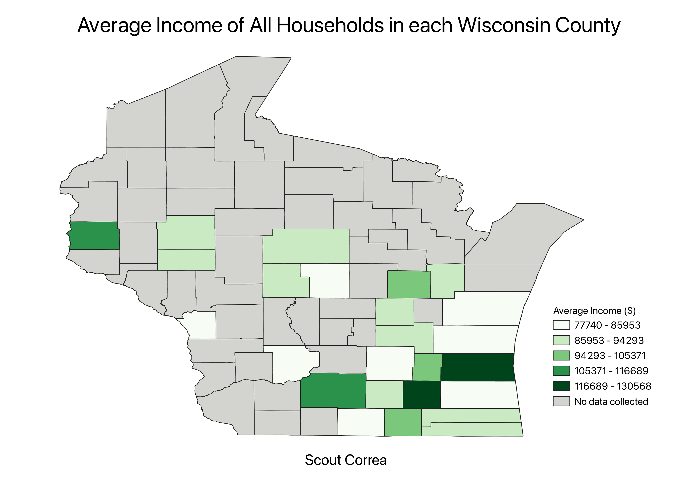

Homework 6: Census Data Choropleth
Scout Correa
My map below depicts the average household income of all households within each county in Wisconsin. Some of the eastern counties appear distorted because the county lines extend into Lake Michigan. Data were collected for 25 of Wisconsin's 72 counties. The most income is concentrated in Waukesha and Ozaukee Counties, while the least amount of income is located in Milwaukee, Manitowoc, Sheboygan, and other rural counties. If data were collected for the rest of the counties, I'd expect that they would either be categorized in the lowest or second lowest average income groups because the majority of those counties are very rural.

Data used for this project:
CSV Dataset
Link to Shapefile